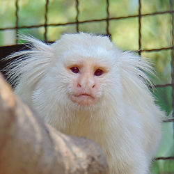
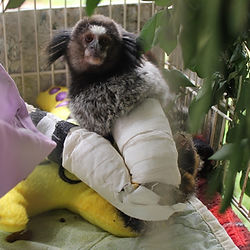
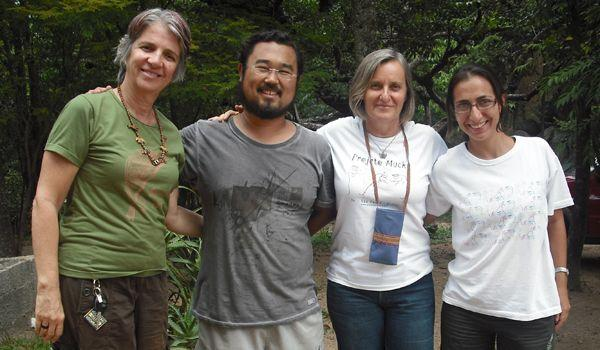
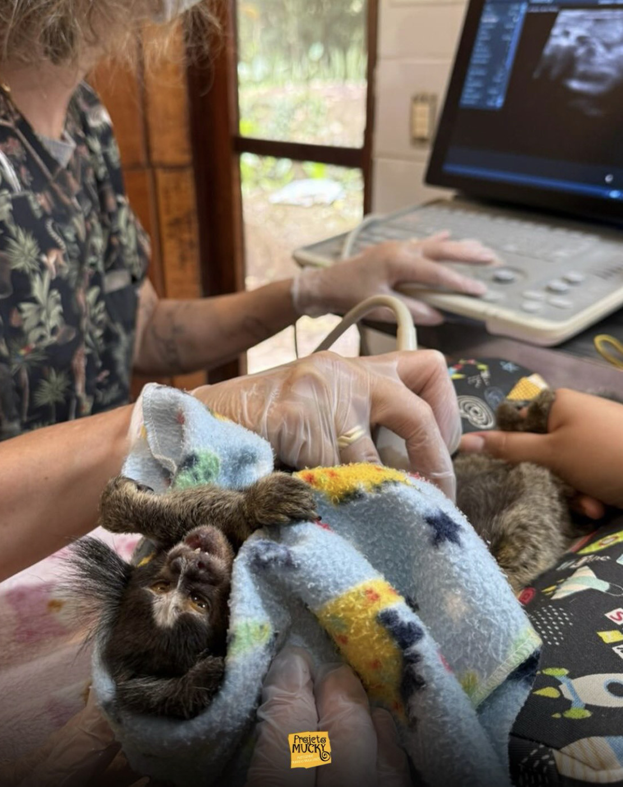
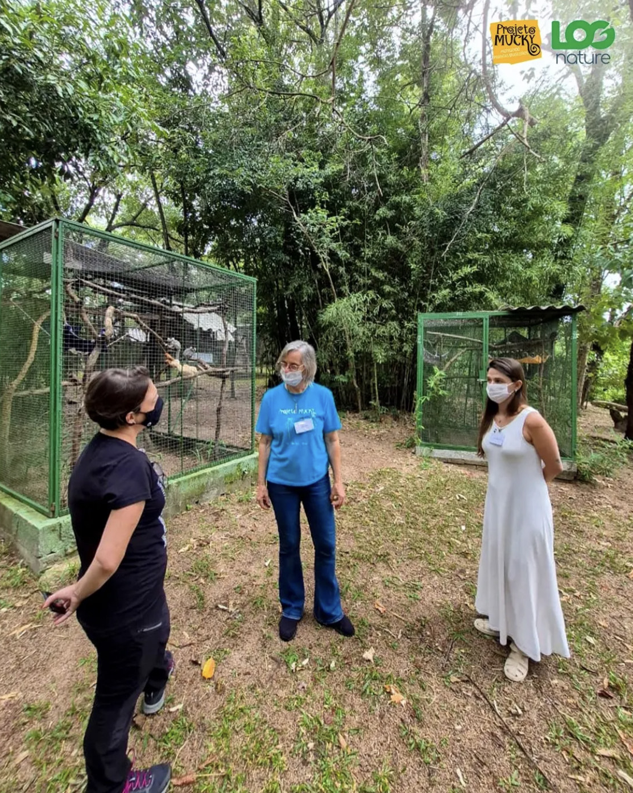

O Projeto Mucky é uma organização brasileira criada em 1985 para proteger os primatas da Mata Atlântica e preservar a biodiversidade. Localizado em São Francisco Xavier, o projeto realiza pesquisas e ações de conservação para proteger espécies ameaçadas, como o muriqui e o sagui-da-serra-escuro.


Além das pesquisas, o Projeto Mucky realiza resgate e recuperação de animais silvestres, combate o tráfico ilegal e promove educação ambiental. O projeto também desenvolve ações de reflorestamento, ajudando na preservação da Mata Atlântica e na proteção da fauna brasileira.
Conheça alguns primatas da Instituição que serão beneficiados com a sua ajuda:



Ajuda online